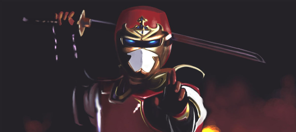

Sekai Ninja Sen Jiraiya (世界忍者戦ジライヤ, Sekai Ninja Sen Jiraiya; traduzido como Guerra Mundial dos Ninjas Jiraiya e lançado no Brasil sob o título de Jiraiya: O Incrível Ninja) é uma série de televisão japonesa do gênero tokusatsu, pertencente à franquia dos Metal Hero. Produzida pela Toei Company, foi exibida originalmente entre 24 de janeiro de 1988 a 22 de janeiro de 1989 pela TV Asahi, totalizando 50 episódios. A série diferenciou-se de suas antecessoras por quebrar o padrão dos Metal Heroes, introduzindo um herói sem superpoderes, e utilizar como temática a tradição japonesa dos ninjas, até então nunca explorada dentro da franquia.
O personagem também apareceu no Super Sentai Shuriken Sentai Ninninger, de 2015 e em dois filmes para cinema junto a outros personagens da Toei, a série foi vendida para fora do Japão com o nome de Ninja Olimpíada Jiraiya devido ao clima olímpico da época, pois o ano da série 1988 foi o ano das Olimpíadas de Seul na Coréia do Sul, aqui na dublagem Brasileira é dito nas Prévias dos episódios o Título Ninja Olimpíada Jiraiya.
Conta a história de um jovem Touha Yamaji (山地闘破, Yamaji Tōha), que foi adotado por Tetsuzan Yamaji (山地哲, Yamaji Tetsuzan) sucessor do clã ninja Togakure (戸隠流, Togakure-ryū), e que possuí um dojo onde ensina e treina seus três filhos em ninjutsu, seus outros dois filhos são Kei e Manabu. Ele guarda a missão passada a cada geração de seu clã, de proteger o segredo do paradeiro de Pako.
Pako é uma espécie de cápsula espacial de uma civilização alienígena muito mais avançada do que a da Terra, com a missão de retornar ao seu planeta de origem. A cápsula foi soterrada em um grande terremoto, no entanto, foi desenterrada e para protegê-la de gananciosos foi escondida e posteriormente foi esculpida uma placa de barro com uma inscrição que revelaria o paradeiro de Pako e que foi confiada para a sua proteção ao clã ninja Togakure há centenas de anos, mas devido à traição do ambicioso e maligno Oninin Dokusai (鬼忍 毒斎) essa placa foi dividida, ficando uma metade com o clã Togakure, onde atualmente Tetsuzan Yamaji tem a sua posse e a outra foi levada por Dokusai, que formou a sua própria facção ninja, a Família de Feiticeiros (妖魔一族, Yōma Ichizoku). Desde então, Pako se tornou muito cobiçado e por isso ficou conhecido pelos ninjas do mundo inteiro (tanto os malignos como os pacíficos, chamados na série como "O Império Ninja" (世界忍者, Sekaininja) como O Tesouro do Século.
Por isso a família Yamaji (妖魔一族, Yōma Ichizoku) se tornou alvo da Família de Feiticeiros, dos ninjas do Império ou de algum desses ninjas trabalhando em conjunto com a Família de Feiticeiros, recebem ataques constantes geralmente na tentativa de lhes roubarem a sua metade da inscrição. E a partir de uma invasão da Família de Feiticeiros ao dojo dos Yamaji na tentativa de conseguir roubar a outra metade da inscrição onde durante esse confronto Kei acabou sendo raptada e Tetsuzan ferido na perna minutos após a fuga da Família de Feiticeiros recebe a mensagem de que para resgatar sua filha deve mandar a sua metade da inscrição para ser trocada pela refém, Tetsuzam além de estar ferido e a sua idade avançada passou a missão de resgatar Kei e proteger Pako a Touha e por isso lhe entregou uma misteriosa armadura vermelha ninja juntamente com uma espada especial para que o jovem as utilizem e assuma a identidade de Jiraya (ジライヤ).
A partir daí o herói luta juntamente com sua família contra as investidas contra a sua família (incluindo invasões em sua casa ou no dojo) ou qualquer outro plano maléfico traçados pela Família de Feiticeiros ou por algum ninja do Império estando ou não trabalhando em conjunto com a Família dos Feiticeiros, sua principal arma é a famosa Espada Olímpica (磁光真空剣, Jikkō Shinkūken), que tem o poder de se transformar momentaneamente numa espada laser efeito com o qual geralmente derrota seus inimigos.
Em muitas missões ele conta com o auxilio de sua irmã Kei Yamaji (山地ケイ), que nos momentos de combate ela utiliza uma armadura branca similar a de Jiraiya ganhando o codinome Himenin Emiha (姫忍 恵美破) ao longo do seriado ele recebe a ajuda de vários ninjas do Império que se tornam seus amigos principalmente da misteriosa Rei Yagyū/Kinin Reiha (柳生 レイ/貴忍 麗破).